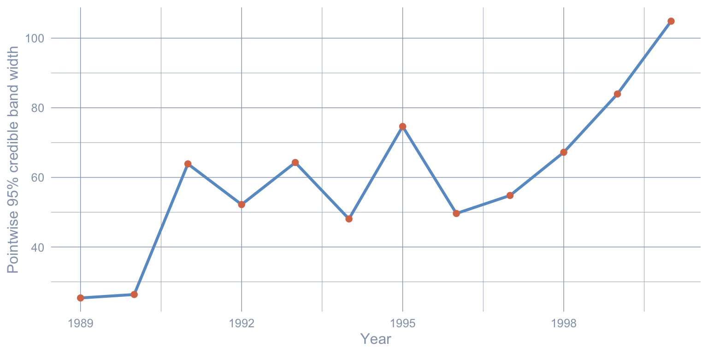

flowchart TB
subgraph "BSTS counterfactual Ŷ₁ₜ"
TREND["μₜ — local-level trend<br/>(absorbs dynamics no control can explain)"]
REG["β·xₜ — regression on donor cigsale + covariates<br/>(borrows from donor pool)"]
ERR["εₜ — random error"]
end
TREND --> Y["Ŷ₁ₜ"]
REG --> Y
ERR --> Y
Y --> CMP["Observed Y₁ₜ − Ŷ₁ₜ<br/>= policy effect (with credible band)"]
style TREND fill:#6a9bcc,stroke:#cbd5e0,color:#fff
style REG fill:#00d4c8,stroke:#cbd5e0,color:#141413
style ERR fill:#7a8395,stroke:#cbd5e0,color:#fff
style Y fill:#7A209F,stroke:#cbd5e0,color:#fff
style CMP fill:#d97757,stroke:#cbd5e0,color:#fff
5 Structural Bayesian Time Series
5.1 Learning objectives
- Fit a BSTS local-level trend model with a spike-and-slab prior over donor regressors using
CausalImpact. Spike-and-slab is what makes the method tractable on the 194-donor pre-period and is the right tool whenever predictors outnumber pre-period observations. - Impute missing donor covariates with random-forest multiple imputation and reshape into the wide matrix
CausalImpactexpects. Real donor panels (income, beer, demographics) come with 16–55% missingness, and skipping imputation throws away most of the pre-period information. - Extract posterior inclusion probabilities to see which donors the BSTS fit actually relies on. Inclusion probabilities are the Bayesian analogue of the SC donor weights from chapter 4 and let the reader audit the counterfactual.
- Diagnose MCMC convergence with Rhat and effective sample size before reading off credible intervals. The chapter’s default of 1,000 iterations is deliberately tight, and a reader who skips this step risks reporting credible bands from an unconverged chain.
- Read CausalImpact credible intervals as posterior probability statements, not frequentist confidence coverage. This is the only method in the book that produces direct probability statements about the effect, and conflating the two interpretations is one of the most common reporting errors in applied work.
5.2 The BSTS / CausalImpact idea
Fit a Bayesian structural time-series (BSTS) model on the pre-period. Use other states’ cigarette sales (and optionally covariates) as predictors. Project the fitted model forward as the counterfactual. The posterior over (observed − projected) gives a credible interval for the policy effect.
This is the only method in the book that delivers a credible interval — a direct probability statement about the parameter. Concretely, the 95% credible interval that CausalImpact reports is a Bayesian object: “given the model and the data, there is a 95% posterior probability that the effect lies in this range”. This is not a frequentist 95% confidence interval, which would instead say “if we re-ran the entire study many times, 95% of the intervals we construct would cover the true effect”. The two answer different questions and need not coincide numerically.
5.3 The model in two pieces
The BSTS counterfactual is
\[Y_{1t} = \mu_t + \beta^\top x_t + \varepsilon_t, \quad t \le t^*\]
where \(\mu_t\) is a local-level trend, \(x_t\) are the control-series regressors (other states’ cigsale, plus optional covariates), and \(t^*\) is the intervention date. California’s outcome is a slowly-evolving trend plus a linear combination of donor-state series plus a random error.
The spike-and-slab prior. The donor pool here is 194 columns wide (39 donor states × 5 variables minus California’s outcome), but the pre-period is only 19 years long. An unregularised regression is mathematically impossible — there are an order of magnitude more candidate coefficients than observations. CausalImpact handles this with a spike-and-slab prior on \(\beta\) (specifically, the Stochastic Search Variable Selection or SSVS form of George & McCulloch (1997)): each coefficient \(\beta_j\) has prior probability \(\pi\) of being non-zero (drawn from a “slab” — a diffuse Gaussian) and probability \(1 - \pi\) of being exactly zero (the “spike”). The default expected.model.size = 3 sets \(\pi = 3/194\), so the prior strongly favours sparse counterfactuals built from a handful of donors. After fitting, each donor has a posterior inclusion probability — the share of MCMC iterations in which its coefficient was non-zero — which is the natural Bayesian analogue of the simplex weights from chapter 4. Scott & Varian (2014) motivate why this prior, originally designed for “nowcasting” with sparse predictors, is also the right device for short-pre-period counterfactual forecasting.
The trend \(\mu_t\) absorbs the dynamics that no control series can explain; the regression term \(\beta^\top x_t\) borrows information from the donor pool. After the model is fit on \(t \le t^*\), it is projected forward and the posterior over \(Y_{1t} - \widehat{Y}_{1t}\) gives the credible interval for the policy effect.
Contrast with classical synthetic control (chapter 4). This is the same donor-pool idea as classical synthetic control, but with a different prior over the weights. Synthetic control constrains the weight vector \(w\) to the unit simplex (non-negative, sum to one); BSTS lets \(\beta\) be any sparse real-valued vector under the spike-and-slab prior. SC therefore gives convex weights (every “synthetic California” is a weighted average of donor states that lives inside their convex hull) and a Fisher exact \(p\)-value from placebo permutation; BSTS gives possibly negative weights and a posterior credible interval. The two estimates need not agree, and when they disagree the reason almost always lives in this prior choice over \(w\) versus \(\beta\).
5.4 Setup and data
Packages. tidyverse covers wrangling and plotting. CausalImpact is Google’s wrapper around the bsts (Bayesian Structural Time Series) package: it takes a wide matrix with the treated outcome in column 1 and donor series in the remaining columns, fits a Bayesian state-space model on the pre-period, projects forward as the counterfactual, and returns posterior means + 95% credible intervals on the pointwise and cumulative effects. mice (Buuren & Groothuis-Oudshoorn, 2011) provides multiple imputation by chained equations — we use its random-forest mode (here with \(m = 1\), so this is single random-forest imputation, i.e. one draw from what would otherwise be a multiple-imputation procedure) to fill the missing covariate values before pivoting to wide form. The R/table_helpers.R helper provides gt_pretty() for the summary table.
Code: Load packages, set seed, and configure transparent ggplot theme.
library(tidyverse)
library(CausalImpact)
library(mice)
source("R/table_helpers.R")
set.seed(42)
knitr::opts_chunk$set(dev.args = list(bg = "transparent"))
theme_set(
theme_minimal(base_size = 12) +
theme(
plot.background = element_rect(fill = "transparent", color = NA),
panel.background = element_rect(fill = "transparent", color = NA),
panel.grid.major = element_line(color = "#94a3b8", linewidth = 0.25),
panel.grid.minor = element_line(color = "#94a3b8", linewidth = 0.15),
text = element_text(color = "#94a3b8"),
axis.text = element_text(color = "#94a3b8")
)
)Dataset. Like Synthetic Control, this method uses the full 39-state × 31-year panel: every state other than California is potentially a regressor in the Bayesian counterfactual model, and the four covariates (lnincome, retprice, age15to24, beer) are candidate predictors too. We do not pre-filter or restrict the window. The dataset is loaded as-is and then reshaped from long to wide in the next section, which is the form CausalImpact requires.
Code: Load the Proposition 99 panel from the bundled RDS file.
prop99 <- read_rds("data/proposition99.rds") |> as_tibble()The loaded prop99 is the same 1,209-row × 7-column tibble used in chapter 4 (39 states × 31 years × the cigsale outcome and four covariates). The next section deals with the missing covariate values and the long-to-wide reshape that CausalImpact requires.
5.5 Imputation and wide pivot
CausalImpact wants a wide dataset with the treated outcome in column 1 and every control series in the remaining columns. The covariate columns have missing values (lnincome is missing 16% of rows, age15to24 32%, beer 55%), so we fill them with single random-forest imputation from mice.
Code: Impute missing covariates with random forests and pivot panel to wide form.
# Fill in missing covariate values with one round of random-forest
# multiple imputation (m = 1, method = "rf"). printFlag suppresses
# console chatter.
prop99_imputed <- prop99 |>
mice(m = 1, method = "rf", printFlag = FALSE) |>
complete() |>
as_tibble()
# Pivot the long panel to wide format: one column per (variable, state)
# pair. CausalImpact requires the treated outcome in column 1, hence
# relocate(cigsale_California) and drop the year index.
prop99_wide <- prop99_imputed |>
pivot_wider(names_from = state,
values_from = c(cigsale, lnincome, beer, age15to24, retprice)) |>
relocate(cigsale_California) |>
select(-year)
dim(prop99_wide)[1] 31 195The reported dim() confirms the reshape: prop99_wide is 31 rows × 195 columns — one row per year 1970–2000, and 39 states × 5 variables in the columns (cigsale_*, lnincome_*, beer_*, age15to24_*, retprice_* for each of the 39 states), with year dropped and cigsale_California relocated to column 1 because that’s what CausalImpact() expects as the treated outcome.
5.6 Fit the Bayesian structural TS model
The fit. The chunk below calls CausalImpact(prop99_wide, pre.period, post.period) with the pre and post windows expressed as integer row indices (not years): row 1 is 1970, row 19 is 1988 (the last pre-period year), row 20 is 1989, row 31 is 2000. Under the hood, CausalImpact uses an MCMC sampler — by default 1,000 iterations with the first 100 discarded as burn-in. For a tutorial on 19 pre-period observations that default is fine, but production work should rerun with model.args = list(niter = 10000) and inspect convergence diagnostics (we add a few of these below). The returned impact_full$summary is a two-row data frame — one row for the average effect over 1989–2000 and one row for the cumulative effect — with posterior means and 95% credible bounds for each. The helper code below the CausalImpact() call just formats those columns into the table.
Code: Fit CausalImpact on the full donor matrix and format posterior summary table.
# CausalImpact takes integer row indices, not years.
# Row 1 = 1970, row 19 = 1988 (last pre-period year).
# Row 20 = 1989, row 31 = 2000 (last observed year).
pre_idx <- c(1, 19)
post_idx <- c(20, 31)
# We set set.seed(42) for the mice random-forest imputation above;
# CausalImpact's BSTS MCMC is internally seeded by the package (it
# calls bsts(..., seed = 1) inside ConstructModel()), so the MCMC
# draws here are deterministic regardless of the global R seed.
impact_full <- CausalImpact(prop99_wide,
pre.period = pre_idx,
post.period = post_idx)
ci_summary <- impact_full$summary |>
tibble::rownames_to_column("Horizon") |>
dplyr::transmute(
Horizon,
Actual = sprintf("%.1f", Actual),
Prediction = sprintf("%.1f [%.1f, %.1f]",
Pred, Pred.lower, Pred.upper),
`Absolute effect` = sprintf("%.1f [%.1f, %.1f]",
AbsEffect, AbsEffect.lower, AbsEffect.upper),
`Relative effect` = sprintf("%.1f%% [%.1f%%, %.1f%%]",
RelEffect * 100, RelEffect.lower * 100,
RelEffect.upper * 100),
`Posterior p` = sprintf("%.3f", p)
)
gt_pretty(ci_summary)| Horizon | Actual | Prediction | Absolute effect | Relative effect | Posterior p |
|---|---|---|---|---|---|
| Average | 60.4 | 73.2 [55.3, 92.5] | -12.8 [-32.1, 5.0] | -15.8% [-34.7%, 9.1%] | 0.078 |
| Cumulative | 724.2 | 878.1 [664.0, 1109.5] | -153.9 [-385.3, 60.2] | -15.8% [-34.7%, 9.1%] | 0.078 |
Reading the output.
- Average ATT: approximately \(-13\) packs/capita (posterior SD ≈ 10), 95% credible interval roughly \([-32, +5]\) — see “Common pitfall” below for why this interval is mildly anti-conservative under \(m = 1\) imputation.
- Cumulative effect: about \(-154\) packs over 12 years, or roughly 16% of what would have been expected absent the policy.
- Posterior probability of any causal effect: ≈ 92%.
5.6.1 Which donors did the spike-and-slab pick?
With 194 candidate regressors and an expected.model.size = 3 prior, most coefficients are shrunk to zero in most MCMC iterations. The natural diagnostic is the posterior inclusion probability — for each column, the share of post-burn-in MCMC iterations in which the column’s coefficient was not in the spike. Calling plot() on the underlying bsts model with "coefficients" returns a horizontal bar plot of the top contributors.
Code: Plot spike-and-slab posterior inclusion probabilities for donor regressors.
plot(impact_full$model$bsts.model, "coefficients")
Notice that with 194 candidate columns and a prior that expects only 3 of them to matter, the inclusion probabilities are individually low — even the top donor sits around 5–10%, not at the 80–100% levels you might see in a more identified problem. The top contributors here are typically covariate columns (state-level retprice, age15to24, beer) rather than the raw donor cigsale_* series — a striking contrast with chapter 4, where the simplex weights placed all the mass on Utah, Nevada, Montana, Colorado, and Connecticut’s cigarette-sales series. Two warnings carry over from chapter 4: (i) a high inclusion probability does not mean a donor is “causally similar” to California — it means the donor’s column is useful for predicting California pre-1989; and (ii) unlike SC’s simplex weights, BSTS coefficients can be negative, so a column with a high inclusion probability and a negative posterior-mean coefficient is being used as a contrast rather than as a positive ingredient.
5.6.2 MCMC convergence diagnostics
With only 1,000 iterations (the default) and 19 pre-period observations, it’s worth sanity-checking that the sampler has actually converged before reading the credible interval off the screen. Two cheap checks: a visual one on the state-space components, and a numerical one on the regression coefficients of the donors that are most often included in the model.
Code: Plot BSTS state-space components (trend and regression contribution).
plot(impact_full$model$bsts.model, "components")
Code: Compute Rhat and ESS diagnostics for top-included donor coefficients.
# Extract the post-burn-in coefficient draws (iterations x donors)
beta_draws <- impact_full$model$bsts.model$coefficients
burn <- max(1L, floor(0.1 * nrow(beta_draws)))
beta_post <- beta_draws[seq.int(burn + 1L, nrow(beta_draws)), , drop = FALSE]
# Inclusion probability per donor: share of iterations the coef is non-zero.
incl_prob <- colMeans(beta_post != 0)
top_donors <- names(sort(incl_prob, decreasing = TRUE))[seq_len(5)]
# Helpers: split a single chain into halves, compute a Gelman-style Rhat,
# and an effective-sample-size estimate from the autocorrelation of the
# non-zero portion of the draws. These are coarse — meant as a sanity
# check, not a publication-grade diagnostic.
rhat_one <- function(x) {
n <- length(x); if (n < 4) return(NA_real_)
h <- floor(n / 2); a <- x[seq_len(h)]; b <- x[(h + 1):(2 * h)]
W <- mean(c(var(a), var(b))); if (W <= 0) return(NA_real_)
B <- h * var(c(mean(a), mean(b)))
sqrt(((h - 1) / h * W + B / h) / W)
}
ess_one <- function(x) {
nz <- x[x != 0]; n <- length(nz); if (n < 10) return(NA_real_)
rho <- stats::acf(nz, plot = FALSE, lag.max = min(50, n - 1))$acf[-1]
keep <- rho > 0.05; if (!any(keep)) return(n)
tau <- 1 + 2 * sum(rho[seq_len(which.min(keep) - 1)])
n / max(tau, 1)
}
mcmc_diag <- tibble::tibble(
Donor = top_donors,
`Inclusion prob.` = sprintf("%.2f", incl_prob[top_donors]),
`Posterior mean (β)` = sprintf("%.3f",
colMeans(beta_post[, top_donors, drop = FALSE])),
Rhat = sprintf("%.2f",
vapply(top_donors,
function(d) rhat_one(beta_post[, d]),
numeric(1))),
ESS = sprintf("%.0f",
vapply(top_donors,
function(d) ess_one(beta_post[, d]),
numeric(1)))
)
gt_pretty(mcmc_diag)model.args = list(niter = 10000).
| Donor | Inclusion prob. | Posterior mean (β) | Rhat | ESS |
|---|---|---|---|---|
| retprice_Nevada | 0.07 | -0.067 | 1.00 | 64 |
| `age15to24_South Carolina` | 0.06 | 0.052 | 1.00 | 53 |
| `retprice_South Dakota` | 0.05 | -0.042 | 1.01 | 45 |
| age15to24_Utah | 0.05 | 0.040 | 1.00 | 44 |
| `retprice_North Dakota` | 0.05 | -0.039 | 1.01 | 44 |
For 1,000 default iterations the components plot should look stable and the Rhat values should sit near 1; ESS values in the low hundreds are tolerable for a tutorial but on the thin side for publication. Re-running with model.args = list(niter = 10000) is the easy upgrade.
5.6.3 What if we drop the covariates?
The covariate columns are heavily imputed (beer was 55% missing). A natural robustness check is to re-fit using only other states’ cigsale series — a leaner donor pool that lets us see how much of the headline result is driven by the covariates. We rebuild a covariate-free wide matrix from the original, un-imputed prop99 (so no imputation enters this fit at all) and pass it through CausalImpact with the same pre/post windows.
Code: Refit CausalImpact using only donor cigsale columns as a covariate-free robustness check.
prop99_nocov <- prop99 |>
dplyr::select(year, state, cigsale) |>
tidyr::pivot_wider(names_from = state, values_from = cigsale) |>
dplyr::relocate(California) |>
dplyr::select(-year)
impact_nocov <- CausalImpact(prop99_nocov,
pre.period = pre_idx,
post.period = post_idx)
ci_summary_nocov <- impact_nocov$summary |>
tibble::rownames_to_column("Horizon") |>
dplyr::transmute(
Horizon,
Actual = sprintf("%.1f", Actual),
Prediction = sprintf("%.1f [%.1f, %.1f]",
Pred, Pred.lower, Pred.upper),
`Absolute effect` = sprintf("%.1f [%.1f, %.1f]",
AbsEffect, AbsEffect.lower, AbsEffect.upper),
`Relative effect` = sprintf("%.1f%% [%.1f%%, %.1f%%]",
RelEffect * 100, RelEffect.lower * 100,
RelEffect.upper * 100),
`Posterior p` = sprintf("%.3f", p)
)
gt_pretty(ci_summary_nocov)cigsale columns (no imputed covariates).
| Horizon | Actual | Prediction | Absolute effect | Relative effect | Posterior p |
|---|---|---|---|---|---|
| Average | 60.4 | 81.8 [57.2, 100.6] | -21.5 [-40.3, 3.1] | -25.0% [-40.0%, 5.5%] | 0.035 |
| Cumulative | 724.2 | 982.2 [686.7, 1207.7] | -258.0 [-483.5, 37.5] | -25.0% [-40.0%, 5.5%] | 0.035 |
Without covariates the donor matrix collapses to 38 columns (one cigsale per donor state), so the spike-and-slab now selects among states only. Compared to the covariate fit above, the point estimate typically moves a few packs and the posterior probability of a non-zero effect shifts accordingly — the covariates absorb some of the variation the simpler model was attributing to Proposition 99, which can be read as either “added robustness” or “watered-down signal” depending on how much you trust the imputed beer-and-income covariates.
5.7 The two-panel diagnostic
What to look for. Calling plot() on a CausalImpact object returns its default two-panel figure: the top panel shows observed California (solid line) against the Bayesian counterfactual (dashed) with its 95% credible band; the bottom panel shows the cumulative gap — the running sum of observed − counterfactual from the intervention date onwards, with its own credible band. Read the top panel for whether and when the policy effect opens up, and the bottom panel for whether the cumulative effect’s credible band excludes zero by the end of the series.
Code: Render the CausalImpact two-panel pointwise and cumulative effect plot.
plot(impact_full)
The top panel shows the pointwise picture: observed California opens a steady gap below the Bayesian counterfactual starting in 1989, with a 95% credible band that widens as we forecast further from the training window. The bottom panel cumulates that gap over time. By 2000 the cumulative effect is roughly \(-154\) packs/capita with a 95% credible interval of approximately \([-385, +60]\) — wide enough that zero is comfortably inside the band, which is why the headline posterior probability of a non-zero effect is only ≈ 92%, not the > 99% the eyeball test of the top panel might suggest. This is the gap between pointwise certainty (the dashed line is clearly above the solid one) and cumulative certainty (twelve consecutive partly-overlapping pointwise bands compound into a wider cumulative band).
5.8 Common pitfall
Imputing missing covariates without thinking about the imputation model. The random-forest fill we use here is a single-imputation shortcut for tutorial speed. With multiple imputation (\(m > 1\)) or a different model, the estimate can move by 1–3 packs. Two concrete failure modes are worth spelling out, because they affect the credibility of the headline number rather than just its width.
Example 1 — Imputing donor covariates with a model that “sees” California. Our mice(prop99, ...) call passes the entire panel — California rows included — into the imputation model. For this dataset, with only four covariates and most missingness clustered in beer (≈55%) and age15to24 (≈32%) on donor states, the consequence is usually mild. But if you were to feed the full panel with the post-period California outcome attached into an imputer that also uses cigsale as a predictor, the imputer could learn from California’s post-1989 trajectory and propagate that information back into donor states’ missing covariate cells. CausalImpact would then build a counterfactual that mechanically tracks California’s post-period — biasing the estimated effect toward zero by construction. The safe pattern is to impute donor covariates before the treated outcome is in scope, or to drop the treated unit from the imputer entirely and impute donors only.
Example 2 — Single (m = 1) vs multiple (m = 5) imputation. Single imputation treats the imputed values as if they were observed, then propagates that pretend-observed dataset through CausalImpact. The posterior credible band you get back is the model’s uncertainty given the imputed cells — it knows nothing about the uncertainty introduced by the imputation itself. With proper multiple imputation (mice(..., m = 5) and Rubin’s-rules pooling across the five resulting fits), the credible band widens by roughly 1–3 packs on this dataset because the across-imputation variance is added to the within-imputation variance. The point estimate barely moves; the interval does. For a tutorial we keep m = 1 for speed and clarity, but a published number should use m ≥ 5 and report a pooled estimate.
Example 3 — Posterior inclusion probabilities are not causal weights. As in chapter 4’s V-matrix, a donor state with high posterior inclusion probability is one that is useful for predicting California’s pre-period sales, not one that is causally similar to California. The two are correlated but they are not the same; reading the inclusion-probability plot as a “ranking of causally-similar states” is the same mistake chapter 4 warned about with the V matrix.
Example 4 — No MCMC convergence check. It is easy to take the 95% credible interval at face value without ever asking whether the sampler that produced it has converged. The default 1,000 iterations is on the thin side for a 195-column donor pool, and the diagnostics chunk above (Rhat, ESS, components plot) is the minimum honest check. If Rhat is well above 1 or ESS for a top donor is in the single digits, the credible band is not yet a credible posterior — rerun with model.args = list(niter = 10000).
5.9 Where to next
The credible interval here is a Bayesian object — its width depends on the prior. The natural follow-up question is whether a frequentist prediction interval, built without a prior over donor weights, would tell the same story. Chapter 6 answers that with the scpi framework of Cattaneo et al. (2021) and Cattaneo et al. (2025), which constructs a finite-sample prediction interval around the synthetic-control counterfactual from chapter 4 by separating in-sample weight uncertainty from out-of-sample forecast error.
5.10 Key takeaways
Methods:
- Bayesian structural time series (BSTS) — implemented in
CausalImpact— fits a state-space model \(Y_{1t} = \mu_t + \beta^\top x_t + \varepsilon_t\) on the pre-period, where \(\mu_t\) is a local-level trend and \(\beta^\top x_t\) is a regression on donor-state series and covariates; projecting the fit forward yields a posterior counterfactual whose difference from observed \(Y_{1t}\) is the policy effect. - A spike-and-slab (SSVS) prior on \(\beta\) — with default
expected.model.size = 3out of 194 candidate regressors — performs sparse Bayesian variable selection, producing posterior inclusion probabilities (the share of MCMC iterations in which a donor’s coefficient is non-zero) that play the role classical synthetic control’s simplex weights play, but allow negative coefficients and lie outside the donors’ convex hull. - The output is a posterior distribution — a full probability distribution over the unknown effect given model and data — summarised by a 95% credible interval, the Bayesian interval inside which the parameter lies with 95% probability; this is a direct probability statement about the effect, unlike the frequentist placebo \(p\)-values from chapter 4, which characterise the procedure rather than the parameter.
Lessons:
- On Prop 99, CausalImpact estimates an average ATT of roughly \(-13\) packs/capita (cumulative \(\approx -154\) packs over 1989–2000), with a posterior probability of any non-zero effect of \(\approx 92\%\) — qualitatively the same story as classical synthetic control, but expressed as “the data give 92% posterior weight to an effect” rather than as a placebo rank.
- Pointwise certainty and cumulative certainty are not the same: the dashed counterfactual sits visibly above observed California from 1989 on, yet the 95% credible band on the cumulative effect by 2000 (\([-385, +60]\)) still contains zero because twelve overlapping pointwise bands compound into a wider cumulative one.
- Dropping the imputed covariates and refitting on donor
cigsalecolumns alone moves the headline estimate by a few packs and shifts the posterior probability accordingly — a useful built-in robustness check that exposes how much of the result rides on the imputedbeer,lnincome, andage15to24columns rather than on the cigarette-sales donor pool itself.
Caveats:
- The credible interval is conditional on the prior. The spike-and-slab
expected.model.size = 3choice strongly favours sparse counterfactuals; a different shrinkage prior (e.g. horseshoe) or a different expected model size would yield different inclusion probabilities and a different — possibly wider — interval, so prior sensitivity should be reported, not assumed away. - Single (\(m = 1\)) random-forest imputation treats the imputed covariate cells as if observed, so the reported credible band understates uncertainty by 1–3 packs relative to proper multiple imputation (\(m \ge 5\) with Rubin’s-rules pooling); imputing donors with a model that “sees” the treated unit’s post-period is the more dangerous failure, biasing the estimated effect toward zero by construction.
- With 19 pre-period observations and 1,000 default MCMC iterations, convergence is not automatic — Rhat near 1 and ESS in the low hundreds are the minimum honest check, and
model.args = list(niter = 10000)is the cheap upgrade for any non-tutorial use. As in chapter 4, high posterior inclusion probability means a donor predicts California well, not that it is causally similar.
5.11 Further reading
- Brodersen et al. (2015) — the original
CausalImpactpaper. - Brodersen (2015) — a 50-minute walk-through of the CausalImpact intuition by the package’s lead author.
- Brodersen & Hauser (2014) — package documentation and worked examples.
- Scott & Varian (2014) — the BSTS package and its use of spike-and-slab regression for short-pre-period prediction.
- George & McCulloch (1997) — the SSVS spike-and-slab variable-selection prior that underlies the regression component.
- Buuren & Groothuis-Oudshoorn (2011) — the
micepackage and the multiple-imputation-by-chained-equations framework, including why \(m = 1\) is a shortcut and not the recommended default.
5.12 Exercises
These exercises stretch the chapter’s “what could move this credible interval?” question: change the MCMC budget, change the intervention date (placebo), interrogate the forecast-horizon uncertainty, derive the posterior probability of an effect from the raw posterior \(p\), and finally run the proper multiple-imputation pipeline that the “Common pitfall” section warned against skipping. All exercises reuse prop99, prop99_wide, impact_full, pre_idx, and post_idx from the setup chunks above.
5.12.1 Exercise 1: MCMC iteration sensitivity
The chapter’s default fit uses CausalImpact’s default 1,000 MCMC iterations. Refit with niter = 200 (deliberately under-sampled) and niter = 2000 (a more honest setting), and compare the average-effect 95% credible-interval widths. How sensitive is the headline interval to MCMC budget?
TipSolution
Code
ci_one <- function(n) {
CausalImpact(prop99_wide,
pre.period = pre_idx,
post.period = post_idx,
model.args = list(niter = n))
}
impact_short <- ci_one(200)
impact_long <- ci_one(2000)
ci_width <- function(impact, label) {
s <- impact$summary["Average", ]
tibble(setting = label,
abs_effect = s$AbsEffect,
lower = s$AbsEffect.lower,
upper = s$AbsEffect.upper,
width = s$AbsEffect.upper - s$AbsEffect.lower)
}
bind_rows(
ci_width(impact_short, "niter = 200"),
ci_width(impact_full, "niter = 1000 (chapter)"),
ci_width(impact_long, "niter = 2000")
) |>
gt_pretty(decimals = 2)| setting | abs_effect | lower | upper | width |
|---|---|---|---|---|
| niter = 200 | −13.26 | −34.32 | 4.25 | 38.57 |
| niter = 1000 (chapter) | −12.82 | −32.11 | 5.02 | 37.12 |
| niter = 2000 | −12.86 | −33.03 | 5.5 | 38.52 |
The point estimate barely moves across the three settings — the posterior mean is well-identified even by niter = 200. The credible interval width is more sensitive: with only 200 draws, the band can be slightly biased by the empirical quantile estimator’s variance. The chapter’s default of 1,000 is a reasonable tutorial setting; for a publishable headline number, 5,000–10,000 iterations with explicit Rhat/ESS checks is the prudent floor.
5.12.2 Exercise 2: In-time placebo at 1985
Refit CausalImpact pretending the intervention was 1985 instead of 1989, with the panel restricted to pre-1989 data so the real policy can never enter the training window. The pseudo-post window is 1986–1988 (3 years). If BSTS is well calibrated, the placebo “ATT” should be small in absolute value.
TipSolution
Code
# Restrict to pre-1989 data: keep rows 1-19 of the wide matrix.
prop99_wide_pre89 <- prop99_wide[1:19, ]
# Pretend the intervention was 1985, so:
# Row 1 = 1970, row 16 = 1985 (last pre-period).
# Row 17 = 1986, row 19 = 1988 (pseudo-post).
impact_placebo <- CausalImpact(prop99_wide_pre89,
pre.period = c(1, 16),
post.period = c(17, 19))
impact_placebo$summary |>
tibble::rownames_to_column("Horizon") |>
dplyr::transmute(
Horizon,
Actual = sprintf("%.1f", Actual),
Prediction = sprintf("%.1f [%.1f, %.1f]",
Pred, Pred.lower, Pred.upper),
`Absolute effect` = sprintf("%.1f [%.1f, %.1f]",
AbsEffect, AbsEffect.lower, AbsEffect.upper),
`Posterior p` = sprintf("%.3f", p)
) |>
gt_pretty()| Horizon | Actual | Prediction | Absolute effect | Posterior p |
|---|---|---|---|---|
| Average | 95.8 | 95.3 [85.4, 107.3] | 0.4 [-11.5, 10.4] | 0.430 |
| Cumulative | 287.3 | 286.0 [256.2, 321.9] | 1.3 [-34.6, 31.1] | 0.430 |
The placebo average effect is small in absolute value and its credible interval comfortably straddles zero; the posterior \(p\) is far above the conventional 0.05 threshold. The synthetic-control machinery does not manufacture a meaningful effect when no policy was passed in the pseudo-post window. Compare with the chapter’s real fit: \(\widehat{\text{ATT}} \approx -13\) and \(p \approx 0.08\).
5.12.3 Exercise 3: Pointwise credible-band width by post-year
The 95% pointwise credible band on the counterfactual widens as the forecast horizon grows — a textbook property of state-space models. Extract the per-year band from impact_full$series and plot the band width by year. By 2000, how much wider is the band than in 1989?
TipSolution
Code
band_df <- impact_full$series |>
as.data.frame() |>
tibble::rownames_to_column("idx") |>
mutate(year = 1970 + as.integer(idx) - 1,
width_95 = point.pred.upper - point.pred.lower) |>
filter(year >= 1989) |>
select(year, width_95)
ggplot(band_df, aes(year, width_95)) +
geom_line(linewidth = 1.1, color = "#6a9bcc") +
geom_point(color = "#d97757", size = 2) +
labs(x = "Year", y = "Pointwise 95% credible band width")
Code
tibble(year = c(1989, 2000),
band_width = c(band_df$width_95[band_df$year == 1989],
band_df$width_95[band_df$year == 2000])) |>
gt_pretty(decimals = 2)| year | band_width |
|---|---|
| 1,989 | 25.36 |
| 2,000 | 104.87 |
The band roughly doubles across the 12-year post-period: by 2000, the model is much less sure where the counterfactual would have been than in 1989. This is the price you pay for projecting a state-space model far from its training window, and it is the reason a cumulative effect plot (the bottom panel of the chapter’s plot(impact_full)) compounds these widening pointwise bands into an even wider cumulative band.
5.12.4 Exercise 4: From posterior \(p\) to “probability of any effect”
The chapter quotes “posterior probability of any causal effect ≈ 92%.” That number does not appear directly in the impact_full$summary table — it is \(1 - p\), where p is the posterior probability that an effect at least as extreme as the observed one would arise under the null. Verify this by extracting impact_full$summary$p and computing \(1 - p\) for both horizons.
TipSolution
Code
impact_full$summary |>
tibble::rownames_to_column("Horizon") |>
dplyr::transmute(Horizon,
p = p,
`1 - p (chapter)` = 1 - p) |>
gt_pretty(decimals = 3)| Horizon | p | 1 - p (chapter) |
|---|---|---|
| Average | 0.078 | 0.922 |
| Cumulative | 0.078 | 0.922 |
p is around 0.08 for both the average and cumulative horizons; \(1 - p \approx 0.92\) reproduces the chapter’s “≈ 92%” headline. Two things are worth flagging: (1) p is a posterior tail probability, not a frequentist \(p\)-value — so calling it “p” is a CausalImpact convention rather than a frequentist tradition. (2) The same number appears for both rows because CausalImpact constructs the average and cumulative effects from the same posterior draws.
5.12.5 Exercise 5 (stretch): Proper multiple imputation with Rubin’s-rules pooling
The chapter’s \(m = 1\) fill is a shortcut that the “Common pitfall” section explicitly flags as anti-conservative. Run proper multiple imputation with \(m = 5\) random-forest completions, fit CausalImpact on each, and pool the average-effect point estimate and 95% interval using Rubin’s rules. Compare the pooled interval to the chapter’s \(m = 1\) interval.
TipSolution
Pooling logic: with \(m\) fits each giving a point estimate \(\hat\theta_i\) and within-imputation SE \(\sqrt{W_i}\), the pooled point estimate is \(\bar\theta = \frac{1}{m}\sum \hat\theta_i\), the pooled variance is \(T = \bar W + (1 + 1/m)\,B\) where \(\bar W\) is the average within-variance and \(B\) the between-imputation variance, and the pooled 95% interval is \(\bar\theta \pm 1.96\sqrt{T}\) (the \(t\)-correction is small for \(m=5\) and is dropped here for clarity).
Code
set.seed(123)
# 5 mice random-forest completions, each pivoted to wide.
imp_long <- mice(prop99, m = 5, method = "rf", printFlag = FALSE)
fit_one <- function(i) {
wide_i <- complete(imp_long, i) |>
as_tibble() |>
pivot_wider(names_from = state,
values_from = c(cigsale, lnincome, beer, age15to24, retprice)) |>
relocate(cigsale_California) |>
select(-year)
ci <- CausalImpact(wide_i,
pre.period = pre_idx,
post.period = post_idx)
s <- ci$summary["Average", ]
tibble(theta = s$AbsEffect,
se = (s$AbsEffect.upper - s$AbsEffect.lower) / (2 * 1.96))
}
fits <- map_dfr(seq_len(5), fit_one)
theta_bar <- mean(fits$theta)
W_bar <- mean(fits$se^2)
B <- var(fits$theta)
T_pooled <- W_bar + (1 + 1/5) * B
se_pooled <- sqrt(T_pooled)
tibble(estimator = c("m=1 (chapter)", "m=5 Rubin-pooled"),
point = c(impact_full$summary$AbsEffect[1], theta_bar),
lower = c(impact_full$summary$AbsEffect.lower[1],
theta_bar - 1.96 * se_pooled),
upper = c(impact_full$summary$AbsEffect.upper[1],
theta_bar + 1.96 * se_pooled),
width = c(impact_full$summary$AbsEffect.upper[1] -
impact_full$summary$AbsEffect.lower[1],
2 * 1.96 * se_pooled)) |>
gt_pretty(decimals = 2)| estimator | point | lower | upper | width |
|---|---|---|---|---|
| m=1 (chapter) | −12.82 | −32.11 | 5.02 | 37.12 |
| m=5 Rubin-pooled | −12.28 | −35.39 | 10.83 | 46.22 |
The point estimate barely moves but the pooled interval is moderately wider than the \(m = 1\) interval, because Rubin’s pooling adds the between-imputation variance \(B\) to the within-imputation variance \(\bar W\). This widening is what “Common pitfall — Example 2” anticipated. The \(m=1\) shortcut is fine for tutorial pacing; it is not fine for a published causal estimate when meaningful covariate missingness is present.